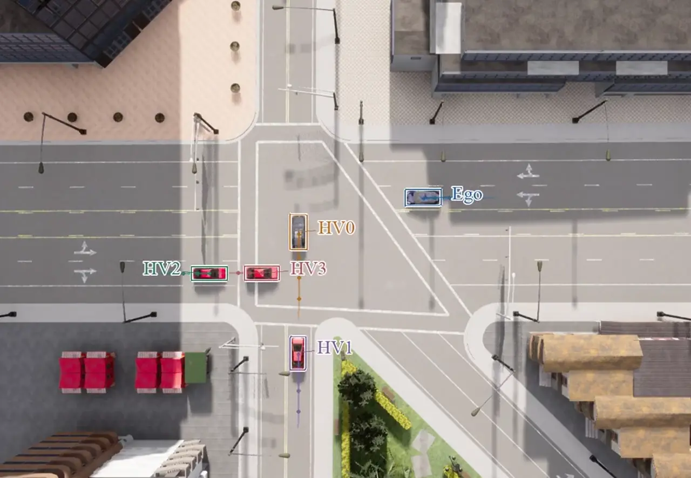
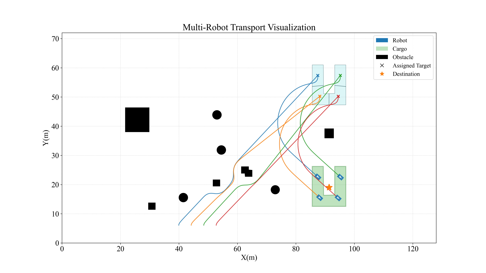

Intelligent Decision-Making
& Robotic Planning
研究无信号路口的通行决策、编队任务优先级，以及多机器人协同搬运。
Lexicographic MPC / CasADi
Lexicographic Optimization for Multi-Robot Planning
编队与导航发生冲突时，如何保护高优先级目标？
查看项目

About & Resources
研究方向涵盖交互式自动驾驶决策、非线性优化及多机器人协同规划。